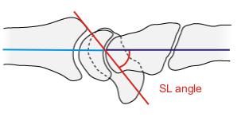
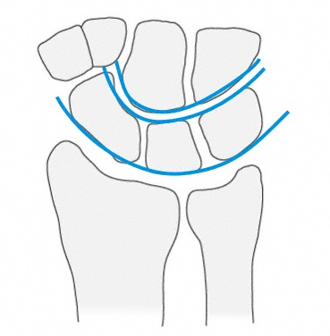

Imaging
Radiographs
- PA, lateral and oblique views of the wrist should be obtained
Normal PA wrist
Normal lateral wrist
- Normal alignment:
- Capitolunate angle (lateral): 0°
- Scapholunate angle (lateral): 45°

Scapholunate angle
- Scapholunate space (AP): < 2 mm
- Radiolunate angle (lateral): 0°
- Gilula's lines (AP): three arcs outlining the radiocarpal, proximal midcarpal and distal midcarpal joints should be
concentric
- Lack of concentricity suggests instability and disruption of normal carpal relationships

Gilula's lines
- Scaphoid series: in addition to lateral and oblique views
- PA wrist in ulnar deviation: scaphoid extends with ulnar deviation, provides a better en face view
- Scaphoid view: PA with beam angled 20°-30° from perpendicular with wrist in ulnar deviation produces a true en
face view
- CT: further characterize fracture patterns, evaluate cortical rim fractures and articular depressions
- MRI: useful in evaluating ligamentous injury
Perilunate dislocations and fracture-dislocations:
- PA: dislocated lunate looks triangular or wedge shaped
- Gilula's lines are disrupted
- Lateral: "spilled teacup" sign with volar angulation of lunate, dissociation of capitate from lunate and loss of
radius-lunate-capitate colinearity
- Clenched fisted PA: obtain after reduction to check for residual SL or LT dissociation and fractures
Radiocarpal fracture-dislocations:
- PA: a minimum of 2/3 of the lunate should articulate with the radius.
- Complete radiocarpal ligament disruption results in ulnar translation of the carpus down the radial inclination
- Evaluate ligament injury with stress radiographs, particularly when reduction occurred spontaneously
- Lateral: demonstrates direction of dislocation
Scapholunate instability:
- PA and lateral views of the wrist can reveal diagnosis of static deformity
- High suspicion if radial styloid fracture exits at level of scapholunate interval
- Lateral: DISI deformity
- Scapholunate angle > 70° is abnormal
- Capitolunate angle > 20° is abnormal
- Terry Thomas sign: scapholunate interval widening (> 2 mm compared to contralateral side)
- Cortical ring sign: represents flexed scaphoid overlapping trapezoid
- Clenched fisted or ulnar deviation PA: accentuates scapholunate interval widening
- Flexion/extension lateral views: can demonstrate uncoupling of scapholunate motion
Lunotriquetral dissociation:
- PA and lateral views of the wrist can reveal diagnosis through disruption in Gilula's lines
- Increased LT space may be observed
- Lateral: may reveal VISI deformity
- Volarflexion of the lunate in neutral wrist position with lunocapitate angle > 10°
- Radial deviation lateral view: may demonstrate dorsiflexed triquetrum with palmar flexed SL complex
- LT dissociation is difficult to identify on radiographs, may require arthroscopy to confirm